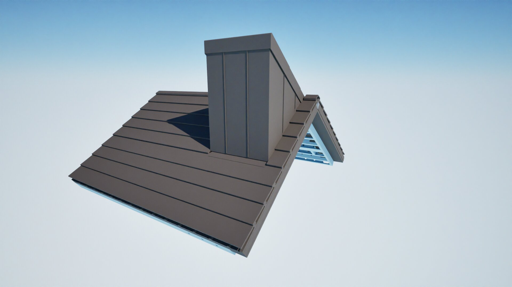
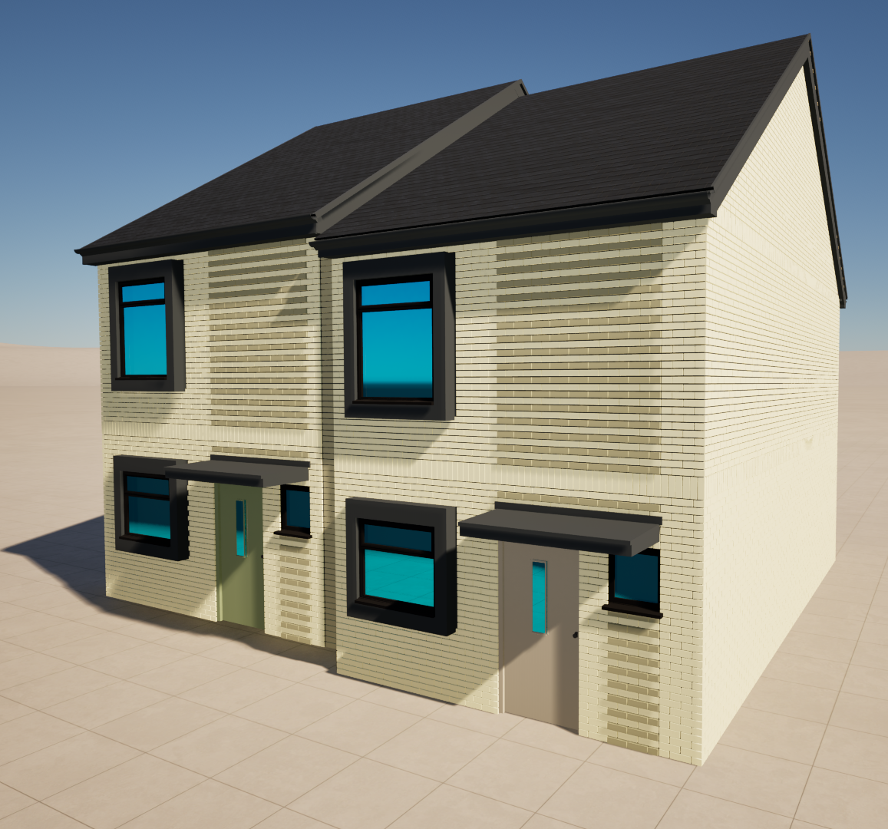

BESPOKE ARCHITECTURAL COMPONENT
Bespoke Chimney Assembly
Development of two façade options for a bespoke factory-manufactured chimney assembly, exploring material interfaces, assembly requirements and integration with the overall architectural design.

ARCHITECTURAL DETAIL DEVELOPMENT
Projecting Window
Development of a projecting window assembly, considering façade integration, component interfaces and technical requirements to translate the architectural design into a practical, buildable solution.